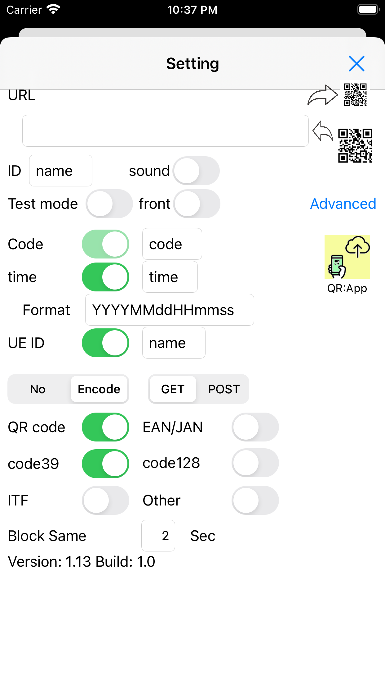

QR code and bar cord reader.
Application sends read data to web site in order to calculate and analysis.
Data format to web is
http://xxx.cgi?code=999&time=YYYYMMDDhhmmss&name=YYY.
URL is available to read with QR code reader.
Parameters except "code" can be omitted.
Parameter "name" is useful to identify UE.
POST and GET are possible to select.
Also encoding is available.
Data is sent to web site and simultanously save into memory and disk in iPhone.
Saved data is possible to send to web, again.
Retry sending is scheduled.
Test mode is to check without send and save data.
Sound is available with vibration.
Front Camera is available.
In case of camera disabling, please set permittion.
And you can see demo view.
Adding emergency direct input field.
Disabled sleep timer to continuously using.
Add button to send timestamp.
App is useful at marathon race.
It can show QR of destination URL in order to copy it to others.
Credit
App uses icons designed from "Flaticon", "ICOOON MONO".
Sample data(perl script)
|
|

|

|

|
|
|